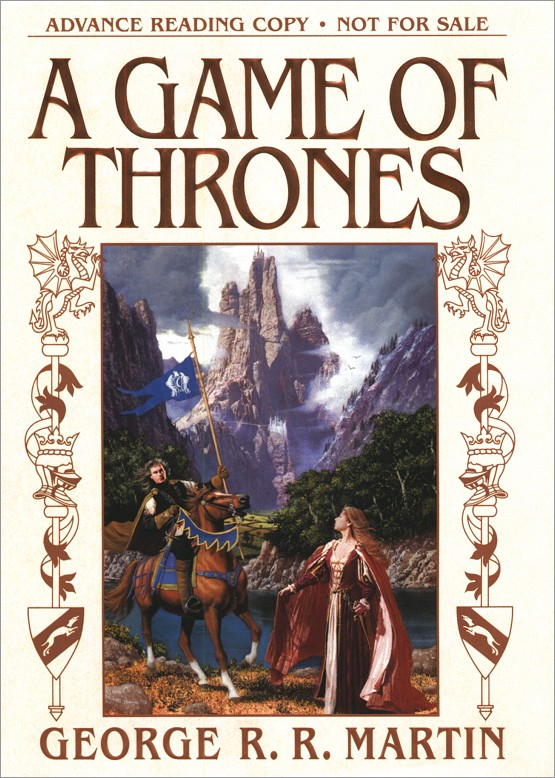

0x0000. 恐惧和勇气并存
Bran thought about it. "Can a man still be brave if he’s afraid?"
"That is the only time a man can be brave," his father told him.
0x0001. Ned 向 Bran解释为什么要亲自对叛逃的守夜人 Gared 行刑
"A ruler who hides behind paid executioners soon forgets what death is."
0x0002. 一些人生的经验，更好地认识自己
"Never forget what you are, for surely the world will not. Make it your strength. Then it can never be your weakness. Armor yourself in it, and it will never be used to hurt you."
0x0003. 生命也充满了无限的可能性，Viva la vida
"Speaking for the grotesques, I beg to differ. Death is so terribly final, while life is full of possibilities."
0x0004. "You know NOTHING, Jon Snow...."
"You Starks are hard to kill."
0x0005. 意思就是殊途同归吧
"Different roads sometimes lead to the same castle. Who knows"
0x0006. Ned 的无奈
A man could not always be where he belonged, though.
0x0007. 知易行难
Tyrion Lannister knew the maps as well as anyone, but a fortnight on the wild track that passed for the kingsroad up here had brought home the lesson that the map was one thing and the land quite another.
0x0008. Jon Snow 选择了困难模式
He had chosen a hard life... or perhaps he should say that a hard life had been chosen for him.
0x0009. 兵来将挡，水来土掩？
The Lannisters never declined, graciously or otherwise. The Lannisters took what was offered.
0x000a. Tyrion 向 Jon 解释为什么他要读这么多书，太有道理了
"Fourteen, and you’re taller than I will ever be. My legs are short and twisted, and I walk with difficulty. I require a special saddle to keep from falling off my horse. A saddle of my own design, you may be interested to know. It was either that or ride a pony. My arms are strong enough, but again, too short. I will never make a swordsman. Had I been born a peasant, they might have left me out to die, or sold me to some slaver’s grotesquerie. Alas, I was born a Lannister of Casterly Rock, and the grotesqueries are all the poorer. Things are expected of me. My father was the Hand of the King for twenty years. My brother later killed that very same king, as it turns out, but life is full of these little ironies. My sister married the new king and my repulsive nephew will be king after him. I must do my part for the honor of my House, wouldn’t you agree? Yet how? Well, my legs may be too small for my body, but my head is too large, although I prefer to think it is just large enough for my mind. I have a realistic grasp of my own strengths and weaknesses. My mind is my weapon. My brother has his sword, King Robert has his warhammer, and I have my mind... and a mind needs books as a sword needs a whetstone, if it is to keep its edge. That’s why I read so much, Jon Snow."
0x000b. 前半句给 Tyrion 弑父埋下伏笔，后半句可能是在呼应巫魔女给 Cersei 下的预言(参考巫魔女的预言)，但另一说是 Cersei 可能会被 Jaime 杀死
"Sometimes I’d imagine my father burning. At other times, my sister."
0x000c. 面对残酷的现实
"That’s good, bastard. Most men would rather deny a hard truth than face it."
0x000d. Tully 家族的族训 Family, duty, honer. 里把 Family 放在第一位置
"My son lies here broken and dying, Luwin, and you wish to discuss a new master of horse? Do you think I care what happens in the stables? Do you think it matters to me one whit? I would gladly butcher every horse in Winterfell with my own hands if it would open Bran’s eyes, do you understand that? Do you?"
0x000e. GRRM 把 know 加斜了，呵呵
Sansa did not really know Joffrey yet, but she was already in love with him.
0x000f. 贵族淑女教育的恶果和悲剧
All she wanted was for things to be nice and pretty, the way they were in the songs.
0x0010. Arya 表示要去骑马时 Sansa 作为一个淑女表示了对骑马的厌恶
"I hate riding, All it does is get you soiled and dusty and sore.”
但是稍后 Joffrey 邀请她去骑马时，Sansa 对骑马的态度直接180度转弯
"Oh, I love riding,"
0x0011. 使命和责任感有时候确实是无法摆脱的枷锁
He would have run, but he was still the King’s Hand, and a Hand must keep his dignity.
0x0012. Ned 早知道真相，所以才有动怒的底气，
Ned had heard her version of the story the night Arya had vanished. He knew the truth.
但是没想到 Sansa 如此坑爹
"I don't know," she said tearfully, looking as though she wanted to bolt. "I don't remember. Everything happened so fast, I didn’t see..."
0x0013. 印证 0x0001 里 Ned 的统治观
"Do it yourself then, Robert," he said in a voice cold and sharp as steel. "At least have the courage to do it yourself."
0x0014. Ned 派四个人送狼尸体回临冬城，四个人啊，把 mercy 演绎到了极致！(这一部分在电视剧里没有描述)
When it was over, he said, “Choose four men and have them take the body north. Bury her at Winterfell.”
0x0015. Bran 的免死金牌GET
Now you know, the crow whispered as it sat on his shoulder. Now you know why you must live.
“Why?” Bran said, not understanding, falling, falling.
Because winter is coming.
0x0016. Catelyn 对少年小指头的看法，是 clever 而不是 wise，虽然表示多年不见，但仍看得出对小指头过于轻视，这很大程度上促成了 Stark 家族的灾难
"He was always clever, even as a boy, but it is one thing to be clever and another to be wise. I wonder what the years have done to him."
0x0017. Jon 加入守夜人时是在第15个命名日前不久，毕竟还是太年轻
No one had told him the Night’s Watch would be like this; no one except Tyrion Lannister. The dwarf had given him the truth on the road north, but by then it had been too late. Jon wondered if his father had known what the Wall would be like. He must have, he thought; that only made it hurt the worse.
0x0018. Benjen 叔叔告诉 Jon ，他毕竟还是 Too young, too simple, sometimes naive.
“On the Wall, a man gets only what he earns. You’re no ranger, Jon, only a green boy with the smell of summer still on you.”
没想到啥都不懂的 Jon 还真以为叔叔在跟他说 literally 的年龄问题，哈哈哈
Stupidly, Jon argued. "I'll be fifteen on my name day," he said. "Almost a man grown."
0x0019. Jon 对旧神产生了质疑
If they were real, he thought, they were as cruel and implacable as winter.
0x001a. 自动脑补到我国的绝境长城 - GFW
“As I was saying... why is it that when one man builds a wall, the next man immediately needs to know what’s on the other side?”
0x001b. Tyrion 演绎0x0002
“Would you rather be called the Imp? Let them see that their words can cut you, and you’ll never be free of the mockery. If they want to give you a name, take it, make it your own. Then they can’t hurt you with it anymore.”
0x001c. Ned 在 Catelyn 返回临冬城前嘱咐的安排，可以看出 Ned 在战争方面毕竟还是身经百战了，虽然其政治智商比较低
"Once you are home, send word to Helman Tallhart and Galbart Glover under my seal. They are to raise a hundred bowmen each and fortify Moat Cailin. Two hundred determined archers can hold the Neck against an army. Instruct Lord Manderly that he is to strengthen and repair all his defenses at White Harbor, and see that they are well manned. And from this day on, I want a careful watch kept over Theon Greyjoy. If there is war, we shall have sore need of his father’s fleet."
0x001d. 任性羞辱 Alliser 骑士
"If a man paints a target on his chest, he should expect that sooner or later someone will loose an arrow at him."
0x001e. Tyrion 经常黑别人的原因
"We all need to be mocked from time to time, Lord Mormont, lest we start to take ourselves too seriously."
0x001f. Tyrion 回城前向熊老表示可以派 Jon 保护他，Jon 便有机会回临冬城看看
"You might send young Snow. He would be glad for a chance to see his brothers."
但是熊老断然拒绝，守夜人的职责就是战斗
"The young ones need to forget the lives they left behind them, the brothers and mothers and all that."
0x0020. Robert、Tywin 和 Jaime 的表现对比很有意思
"I promise, the king will hear of your need," Tyrion said gravely, “and I will speak to my father and my brother Jaime as well.” And he would. Tyrion Lannister was as good as his word. He left the rest unsaid; that King Robert would ignore him, Lord Tywin would ask if he had taken leave of his senses, and Jaime would only laugh.
0x0021. Jon 这句话好屌啊，哈哈哈，但是没想到目前来说 Stark 家真正的危险不在长城北边，而是在南边
"Tell Robb that I’m going to command the Night’s Watch and keep him safe, so he might as well take up needlework with the girls and have Mikken melt down his sword for horseshoes."
0x0022. Ned 对 Arya 说的，很有道理
"When the snows fall and the white winds blow, the lone wolf dies, but the pack survives. Summer is the time for squabbles. In winter, we must protect one another, keep each other warm, share our strengths."
0x0023. 维斯特洛大陆的百姓不会关心谁在权力的游戏中取胜，当然也不会希望 Viserys 回君临当总书记，只有贵族才会用 right 这个词来说事。Ned 也是太看重 right，不懂权衡人心
"The common people pray for rain, healthy children, and a summer that never ends," Ser Jorah told her. "It is no matter to them if the high lords play their game of thrones, so long as they are left in peace." He gave a shrug. "they never are."
0x0024. Ned 就是不信邪，轻信别人，这句话是小指头说给他的，真假虚实确难判断
"You are slow to learn, Lord Eddard. Distrusting me was the wisest thing you’ve done since you climbed down off your horse."
0x0025. 回想起 Tyrion对自己说过的话 (0x000c)，Jon 觉得 Sam 也算是有点勇气
The world was full of cravens who pretended to be heroes; it took a queer sort of courage to admit to cowardice as Samwell Tarly had.
0x0026. 说起做事情，Jon 也算是有手段有胆识
Jon persuaded some, cajoled some, shamed the others, made threats where threats were required.
0x0027. Jon 在心理上完成了从临冬城私生子到守夜人的转变
The grey walls of Winterfell might still haunt his dreams, but Castle Black was his life now, and his brothers were Sam and Grenn and Halder and Pyp and the other cast-outs who wore the black of the Night’s Watch.
0x0028. 傻姑娘
At first she thought she hated him for what they’d done to Lady, but after Sansa had wept her eyes dry, she told herself that it had not been Joffrey’s doing, not truly. The queen had done it; she was the one to hate, her and Arya. Nothing bad would have happened except for Arya.
0x0029. 这一段在剧集中没有，Lannister 一家在君临日子确实不好过啊
Jaime Lannister put a hand on the king’s shoulder, but the king shoved him away hard. Lannister stumbled and fell. The king guffawed. “The great knight. I can still knock you in the dirt. Remember that, Kingslayer.” He slapped his chest with the jeweled goblet, splashing wine all over his satin tunic. “Give me my hammer and not a man in the realm can stand before me!”
Jaime Lannister rose and brushed himself off. “As you say, Your Grace.” His voice was stiff.
0x002a. 猎狗喷 Sansa, 哈哈哈哈哈
"Some septa trained you well. You’re like one of those birds from the Summer Isles, aren’t you? A pretty little talking-bird, repeating all the pretty little words they taught you to recite."
0x002b. Barristan 这句话很有道理，告诉我们喝了酒不要乱说话
"They say night’s beauties fade at dawn, and the children of wine are oft disowned in the morning light."
0x002c. Robert 也是惨，铁王座根本特么不好坐啊
"I swear to you, I was never so alive as when I was winning this throne, or so dead as now that I’ve won it."
Cersei 对其性冷淡
"Oh, Cersei is lovely to look at, truly, but cold... the way she guards her cunt, you’d think she had all the gold of Casterly Rock between her legs."
知道他儿子在撒谎，但是却无可奈何
"I am sorry for your girl, Ned. Truly. About the wolf, I mean. My son was lying, I’d stake my soul on it."
想出去放空自己吧，又咽不下这口气
"You know what stops me? The thought of Joffrey on the throne, with Cersei standing behind him whispering in his ear. My son. How could I have made a son like that, Ned?"
0x002d. 你还是另请高明吧，这个小伙子的选择其实非常明智，如果加入国王之手护卫队，后面不是被杀就是加入守夜人，再无其他出路
Ned sent Alyn to seek him out and offer him a position with the Hand’s guard, but the boy was flush with wine and victory and riches undreamed of, and he refused.
0x002e. Robert 在政治局里面被完全架空
"His brothers hate the Lannisters, true enough, but hating the queen and loving the king are not quite the same thing, are they? Ser Barristan loves his honor, Grand Maester Pycelle loves his office, and Littlefinger loves Littlefinger."
0x002f. Ned 太过于追求真相而没有果断下手防范，很大程度上导致了其倒台，还是对 right 这个词看得太重
Ned’s head was pounding. "Why? Why now? Jon Arryn had been Hand for fourteen years. What was he doing that they had to kill him?"
"Asking questions," Varys said, slipping out the door.
0x0030. A Lannister always paid his debts.
Tyrion had made a special effort to learn all their names, so he might thank them later for their tender treatment of him. A Lannister always paid his debts.
0x0031. 大家对小指头的评价都不高，不知道为什么Stark一家还傻傻分不清楚
"Because it is his nature. Lying comes as easily as breathing to a man like Littlefinger."
"Littlefinger has never loved anyone but Littlefinger, and I promise you that it is not your hand that he boasts of, it’s those ripe breasts of yours, and that sweet mouth, and the heat between your legs."
0x0032. 好想知道这到底是不是真的
"Why, every man at court has heard him tell how he took your maidenhead, my lady."
0x0033. Bronn的这句话极具煽动性！！！
"Nothing like a woman after a man’s been blooded, take my word."
0x0034. 这句话这么有道理，Catelyn就是听不进去啊，总之Stark一家都是戴着有色眼镜看Lannister一家的。另一方面，也反映出Tyrion和Jaime的兄弟情深
"There is a serious flaw in Littlefinger’s fable. Whatever you may believe of me, Lady Stark, I promise you this- I never bet against my family."
0x0035. 恐惧比利剑更伤人
Fear cuts deeper than swords.
0x0036. 看来其他人真不是当着Stark的人在黑小指头，小指头太狡猾了
"Littlefinger... the gods only know what game Littlefinger is playing."
0x0037. Barristan 说的话不多，但都充满正义感且满含哲理
"Your Grace, there is honor in facing an enemy on the battlefield, but none in killing him in his mother’s womb."
0x0038. Ned的统治观
"Do it yourself, Robert. The man who passes the sentence should swing the sword. Look her in the eyes before you kill her. See her tears, hear her last words. You owe her that much at least."
0x0039. 探索真相的过程是要付出代价的
And when you have it, what then? Some secrets are safer kept hidden. Some secrets are too dangerous to share, even with those you love and trust.
0x003a. 小指头极尽讽刺之能，其实后面Ned死得也一点都不noble
"You rule like a man dancing on rotten ice. I daresay you will make a noble splash."
0x003b. 好人当久了，想法太单一，Cat犯的错确实挺多的
Could I be wrong? Catelyn wondered, not for the first time.
0x003c. 因为不是POV，目前尿遁鱼的性格只能从第三者眼里了解些许
Brynden Tully had always known how to listen... to anyone but her father.
0x003d. 贵族的政治婚姻有多少能是真爱呢，呵呵
Lord Arryn was a dutiful husband, but their marriage was made from politics, not passion.
0x003e. 不黑不喷，Tyrion对Jaime、Tywin和Cersei的评价非常到位
"My brother is undoubtedly arrogant," Tyrion Lannister replied. "My father is the soul of avarice, and my sweet sister Cersei lusts for power with every waking breath. I, however, am innocent as a little lamb. Shall I bleat for you?"
0x003f. Lyanna 也不笨嘛
"Love is sweet, dearest Ned, but it cannot change a man’s nature."
0x0040. 这个问题好深奥...
If the gods frowned so on bastards, he thought dully, why did they fill men with such lusts?
0x0041. 在Ned眼里，Rhaegar 的人品显然没有Robert说的那么糟糕，关键是如果他真的强暴了自己的妹妹，Ned还会这么想吗？所以关于Rhaegar和Lyanna之间的事情，可能并不是Robert说的那么简单
For the first time in years, he found himself remembering Rhaegar Targaryen. He wondered if Rhaegar had frequented brothels; somehow he thought not.
0x0042. Viserys 笨得萌萌哒，自己的骑士都要这样黑他
"Viserys could not sweep a stable with ten thousand brooms."
0x0043. 愚蠢或绝望所驱使的行为，彼此常常难以区分
"Folly and desperation are ofttimes hard to tell apart."
0x0044. 霸气!
"I made no threats," Tyrion said. "That was a promise."
0x0045. 不止一次写到Tyrion对家人的看法，反而显得真实而客观
His sister was not without a certain low cunning, but her pride blinded her.
His brother never untied a knot when he could slash it in two with his sword.
Joffrey这么做死，可能也是继承了他父母两人的人格缺陷所致。
0x0046. 书读得多就是不一样! 狮狼两家这么多人，Tyrion是第一个察觉到有第三方势力在背后制造阴谋的
Perhaps the direwolf and the lion were not the only beasts in the woods, and if that was true, someone was using him as a catspaw.
0x0047. 文盲也要分两种
Some illiterates held writing in disdain; others seemed to have a superstitious reverence for the written word, as if it were some sort of magic.
0x0048. 政治婚姻害人啊，当然Lysa自己傻也占很大的原因
Lysa’s policies varied with her moods, and her moods changed hourly. The shy girl she had known at Riverrun had grown into a woman who was by turns proud, fearful, cruel, dreamy, reckless, timid, stubborn, vain, and, above all, inconstant.
0x0049. Vardis骑士在和Bronn比武时用剑居然是Jon Arryn生前的佩剑，而不是自己的剑！Lysa真的是做大死
The engraved silver blade was beautiful beyond a doubt, but it seemed to Catelyn that Ser Vardis might have been more comfortable with his own sword.
0x004a. Cat回忆起的这场比斗当然是Brandon和小指头的那场比武。。。哎，感觉Cat对小指头还是心怀愧疚，这种复杂感情被小指头把握得很好并且加以利用
And as she watched, the memory of another duel in another time came back to Catelyn Stark, as vivid as if it had been yesterday.
0x004b. Jon 认真起来思维能力很强，讲道理也很有逻辑
"Lord Randyll couldn’t make Sam a warrior, and Ser Alliser won’t either. You can’t hammer tin into iron, no matter how hard you beat it, but that doesn’t mean tin is useless."
这表达能力真的是杠杠的
"The Night’s Watch needs every man. Why kill one, to no end? Make use of him instead."
0x004c. Aemon学士也对Jon刮目相看，原来这个小伙子这么能说。。。。
"Maester Luwin taught you well, Jon Snow. Your mind is as deft as your blade, it would seem."
0x004d. The Lannisters shit gold...
"If the day ever comes when you’re tempted to sell me out, remember this, Bronn-I’ll match their price, whatever it is."
0x004f. Tyrion是真不爽他父亲
He dreamt of the sky cell. This time he was the gaoler, not the prisoner, big, with a strap in his hand, and he was hitting his father, driving him back, toward the abyss...
0x0050. 综合目前Ned的政治觉悟，这完全是其单方面的"信任洁癖"
He never trusted what a man told him from his knees.
0x0051. 好吧，每次 Sansa POV 都感觉她婊，这尼玛爹受伤了她都看不顺眼了。。。
"Father’s leg, silly. It hurts him ever so much, it makes him cross. Otherwise I’m certain he would have sent Ser Loras."
小指头都忍不住要传授她一点人生的经验
"Life is not a song, sweetling. You may learn that one day to your sorrow."
0x0052. TOO YOUNG!!! 自己家被杀了那么多人，爹腿还断了，还尼玛想着要和 Joffrey 好，这个傻姑娘完全被自己的虚荣心吞噬了
"I don’t want someone brave and gentle, I want him. We’ll be ever so happy, just like in the songs, you’ll see. I’ll give him a son with golden hair, and one day he’ll be the king of all the realm, the greatest king that ever was, as brave as the wolf and as proud as the lion."
0x0053. Ned真是痛傻了，这个时候还需要去一遍遍地检讨自己的做法吗？都被挑衅成这个样子了，还不硬一把，真的大丈夫？
Ned thought, if it came to that, the life of some child I did not know, against Robb and Sansa and Arya and Bran and Rickon, what would I do? Even more so, what would Catelyn do, if it were Jon’s life, against the children of her body? He did not know. He prayed he never would.
0x0054. 鹿家血统确实牛逼
No matter how far back Ned searched in the brittle yellowed pages, always he found the gold yielding before the coal.
0x0055. 原来Cersei也向Ned提过妥协条件的
"If friends can turn to enemies, enemies can become friends. Your wife is a thousand leagues away, and my brother has fled. Be kind to me, Ned. I swear to you, you shall never regret it."
0x0056. Cersei最为人知的一句话
"When you play the game of thrones, you win or you die. There is no middle ground."
0x0057. Khal Drogo 快三秒...
Dany wrapped her arms around his shoulders and pressed her face against his neck as he thrust himself inside her. Three quick strokes and it was done.
0x0058. Ned 还在担心别人，没意识到自己已经很危险了
The queen had gone; that was some small relief, at least. If she had any sense, Cersei would take her children and fly before the break of day, Ned thought. She had lingered too long already.
0x0059. 已经对这场权力的游戏丧失斗志了
His regency would be a short one, he reflected as the wax softened. The new king would choose his own Hand. Ned would be free to go home. The thought of Winterfell brought a wan smile to his face. He wanted to hear Bran’s laughter once more, to go hawking with Robb, to watch Rickon at play. He wanted to drift off to a dreamless sleep in his own bed with his arms wrapped tight around his lady, Catelyn.
0x005a. 小指头对 Stannis 的看法
"No doubt he’ll thank you for handing him the crown, but he won’t love you for it."
Stannis 在龙石被围的那次看来是真的给他留下阴影了，小指头这句话很讲道理，Stannis 上台肯定会掀起腥风血雨，但是话说回来，Stannis不上台，也会掀起腥风血雨。。。
"Robert found it in him to pardon men who served King Aerys, so long as they did him fealty. Stannis is less forgiving. He will not have forgotten the siege of Storm’s End, and the Lords Tyrell and Redwyne dare not."
0x005b. 小指头这句话直接戳穿 Ned 的政治洁癖，非常在理
"You wear your honor like a suit of armor, Stark. You think it keeps you safe, but all it does is weigh you down and make it hard for you to move. Look at you now. You know why you summoned me here. You know what you want to ask me to do. You know it has to be done... but it’s not honorable, so the words stick in your throat."
0x005c. 熊老发表重要讲话，传达守夜人精神
"A man of the Night’s Watch lives his life for the realm. Not for a king, nor a lord, nor the honor of this house or that house, neither for gold nor glory nor a woman’s love, but for the realm, and all the people in it. A man of the Night’s Watch takes no wife and fathers no sons. Our wife is duty. Our mistress is honor. And you are the only sons we shall ever know."
0x005d. 估计旧神也不会鸟他。。。
"The Seven have never answered my prayers. Perhaps the old gods will."
0x005e. 守夜人誓词！
"Hear my words, and bear witness to my vow, Night gathers, and now my watch begins. It shall not end until my death. I shall take no wife, hold no lands, father no children. I shall wear no crowns and win no glory. I shall live and die at my post. I am the sword in the darkness. I am the watcher on the walls. I am the fire that burns against the cold, the light that brings the dawn, the horn that wakes the sleepers, the shield that guards the realms of men. I pledge my life and honor to the Night’s Watch, for this night and all the nights to come."
0x005f. 吃一堑，长一智
A bruise is a lesson, she told herself, and each lesson makes us better.
0x0060. Braavos 首席剑士 Syrio Forel 的心法，这一节他讲的海王用猫选首席剑士的故事很有趣
"Opening your eyes is all that is needing. The heart lies and the head plays tricks with us, but the eyes see true. Look with your eyes. Hear with your ears. Taste with your mouth. Smell with your nose. Feel with your skin. Then comes the thinking, afterward, and in that way knowing the truth."
0x0061. Arya 这判断能力，比三傻不知道高到哪里去了
"Put down the stick, girl," Ser Meryn told her. "I am a Sworn Brother of the Kingsguard, the White Swords."
"So was the Kingslayer when he killed the old king,” Arya said. “I don’t have to go with you if I don’t want."
0x0062. Syrio 剑谱，重要的事说三遍: Fear cuts deeper than swords...Fear cuts deeper than swords...Fear cuts deeper than swords...
Swift as a deer. Quiet as a shadow. Fear cuts deeper than swords. Quick as a snake. Calm as still water. Fear cuts deeper than swords. Strong as a bear. Fierce as a wolverine. Fear cuts deeper than swords. The man who fears losing has already lost. Fear cuts deeper than swords. Fear cuts deeper than swords. Fear cuts deeper than swords.
0x0063. Jon 剑谱，用尖的那头去刺别人！
Everything Syrio Forel had ever taught her vanished in a heartbeat. In that instant of sudden terror, the only lesson Arya could remember was the one Jon Snow had given her, the very first. She stuck him with the pointy end, driving the blade upward with a wild, hysterical strength.
0x0064. 比她姐姐三傻高太多了。。。这么小个姑娘的这次逃生，我给满分！
The memory made Arya smile, and after that the darkness held no more terrors for her. The stableboy was dead, she’d killed him, and if he jumped out at her she’d kill him again.
0x0065. Sansa 还特么沉浸在歌谣的世界里，无法自拔
In the songs, the knights never screamed nor begged for mercy.
0x0066. 哎，目前为止本书最讨厌 Sansa，完全继承了她姨 Lysa 的缺陷。客观地看其他家族的人，有些人显得坏，不过是为自己的家族争取利益罢了，但是因为自己的虚荣，把家族的利益忘得一干二净，目前只有 Sansa 一人
"Please, I need to speak to the queen again," Sansa told them, as she told everyone she saw that day. "She’ll want to talk to me, I know she will. Tell her I want to see her, please. If not the queen, then Prince Joffrey, if you’d be so kind. We’re to marry when we’re older."
0x0067. 花痴傻女智商为零
That night Sansa dreamt of Joffrey on the throne, with herself seated beside him in a gown of woven gold.
0x0068. Sansa 是这样被 Lannister 家族控制住的，太有趣了。。。
So she went to the queen instead, and poured out her heart, and Cersei had listened and thanked her sweetly... only then Ser Arys had escorted her to the high room in Maegor’s Holdfast and posted guards, and a few hours later, the fighting had begun outside.
0x0069. 论吃里扒外，Sansa 我给满分
"I’m not like Arya," Sansa blurted. "She has the traitor’s blood, not me. I’m good, ask Septa Mordane, she’ll tell you, I only want to be Joffrey’s loyal and loving wife."
0x006a. Sansa 心里只想和 Joffrey 结婚，或者说，只想成为皇后，这完全蒙蔽了她的双眼，抹杀了她的思考能力。话说回来，中世纪的女性又有多少能从小接受倡导独立、客观思考的教育呢
Joff would need to punish Father, the lords would expect it, but perhaps he could send him back to Winterfell, or exile him to one of the Free Cities across the narrow sea. It would only have to be for a few years. By then she and Joffrey would be married. Once she was queen, she could persuade Joff to bring Father back and grant him a pardon.
0x006b. 终于想起她亲妹妹了。。。
It was not until later that night, as she was drifting off to sleep, that Sansa realized she had forgotten to ask about her sister.
0x006c. Jon 开始变得坚强，守夜人的身份成了他得精神依托
I am a brother of the Night’s Watch now, not a frightened boy.
0x006d. 还不忘带带 Samwell 这个猪队友
"Maester Aemon sent you to be his eyes, didn’t he? What good are eyes if they’re shut?"
0x006f. 熊老的箴言
"They say the king loved to hunt. The things we love destroy us every time, lad. Remember that."
0x0070. 虽然是 Stark 的私生子，对家族的使命感比 Sansa 高太多了
"No," Jon said at once. "That couldn’t be. My father would never betray the king!"
0x0071. 熊老作为一位长者，确实字字珠玑
"A boy king... I imagine he’ll listen to his mother. A pity the dwarf isn’t with them. He’s the lad’s uncle, and he saw our need when he visited us. It was a bad thing, your lady mother taking him captive-"
0x0072. 虽然 Cat 不待见他，Sansa 也只把他当半个兄弟，对家人的感情依然这么深厚，比 Sansa 高太多了
This is my father, my sisters, how can it be none of my concern?
0x0073. Jon 在守夜人里面已经用自己的实力和魅力建立起了圈子
Outside, one of the guards looked at him and said, "Be strong, boy. The gods are cruel."
以及这几个死忠
His friends rallied to him. "We asked the septon to light a candle for your father," Matthar told him. "It’s a lie, we all know it’s a lie, even Grenn knows it’s a lie," Pyp chimed in.
0x0074. 原来北境骑士少，也是由于宗教原因，只有七神才在凡间搞这么多套路
"To be a knight, you must stand your vigil in a sept, and be anointed with the seven oils to consecrate your vows. In the north, only a few of the great houses worship the Seven. The rest honor the old gods, and name no knights... but those lords and their sons and sworn swords are no less fierce or loyal or honorable. A man’s worth is not marked by a ser before his name. As I have told you a hundred times before."
0x0075. Ned 的统治观已经在 Robb 心中根深蒂固
"My lord father would never have sent men off to die while he huddled like a craven behind the walls of Winterfell."
0x0076. 不愧是 Stark 家的人，Robb 表示能hold住北境家族
"My lord father taught me that it was death to bare steel against your liege lord," Robb said, "but doubtless you only meant to cut my meat."
但是事后表示确实快吓尿了，这时候才15岁啊！
"I thought he was going to kill me," Robb confessed.
0x0077. Sansa 这蠢货，哥哥都看不惯了
"She says we must be loyal, and when she marries Joffrey she will plead with him to spare our lord father’s life." His fingers closed into a fist, crushing Sansa’s letter between them. "And she says nothing of Arya, nothing, not so much as a word. Damn her! What’s wrong with the girl?"
0x0078. 没想到女野人一语成籖
"They’re sad. Your lord brother will get no help from them, not where he’s going. The old gods have no power in the south. The weirwoods there were all cut down, thousands of years ago. How can they watch your brother when they have no eyes?"
0x0079. 原来半巨人是这样来的，真有道理
"The women take human men for lovers, and it’s from them the half bloods come. It goes harder on the women they catch. The men are so big they’ll rip a maid apart before they get her with child."
0x007a. 一语成籖啊！
"You tell him he’s bound on marching the wrong way. It’s north he should be taking his swords. North, not south."
0x007b. Robb 的这句话侧面反映出 Stark 家老龄化严重的问题
"He can’t be a baby forever. He’s a Stark, and near four."
0x007c. Daenerys 因为自己是真龙血脉，家族使命驱使她不甘平凡
If I were not the blood of the dragon, she thought wistfully, this could be my home.
That should be enough for any woman... but not for the dragon.
0x007d. You have woken the dragon!
"No. He cannot have my son." She would not weep, she decided. She would not shiver with fear. The Usurper has woken the dragon now, she told herself...
0x007e. Wyman 大人都没指望这辈子还会经历战争，哈哈哈哈
"If I had thought to see war again in my lifetime, I should have eaten a few less eels"
0x007f. Catelyn 读到 Sansa 的信后的反应。。。
Concern gave way to disbelief, then to anger, and lastly to fear.
0x0080. 太傻了
I shouldn’t be afraid, she told herself. I have nothing to be afraid of, it will all come out well, Joff loves me and the queen does too, she said so.
0x0081. 闷声受大罪
Even now, he was a Stark of Winterfell, and his grief and his rage froze hard inside him.
0x0082. 在南方，旧神庇护不了他的神民
The gods did not deign to answer.
0x0083. Varys 在劝人功底上是满分级别的选手
"All men must swallow the sour with the sweet. High lords and eunuchs alike. Your hour has come, my lord."
0x0084. 男人不止一面，今天你秀哪一面？
"They taught me that each man has a role to play, in life as well as mummery. So it is at court. The King’s Justice must be fearsome, the master of coin must be frugal, the Lord Commander of the Kingsguard must be valiant... and the master of whisperers must be sly and obsequious and without scruple. A courageous informer would be as useless as a cowardly knight."
0x0085. 优柔寡断，耽误大局
It was not wine that killed the king. It was your mercy.”
0x0086. Ned 对 Jon Snow 才是爱得深沉
The thought of Jon filled Ned with a sense of shame, and a sorrow too deep for words.
0x0087. Varys 表示小指头在他面前只能当老二。。。
"Littlefinger is the second most devious man in the Seven Kingdoms. Oh, I feed him choice whispers, sufficient so that he thinks I am his... just as I allow Cersei to believe I am hers."
0x0088. 好人难当，Ned 受政治正确所累
"The High Septon once told me that as we sin, so do we suffer. If that’s true, Lord Eddard, tell me... why is it always the innocents who suffer most, when you high lords play your game of thrones?"
0x0089. Tully 家族对于其封臣，要求的是绝对的臣服，但是却没考虑到 Tully 一家早已经把 Frey 家得罪了，因为 Walder Frey 认为自家占据了河渡口，却没有得到应有的利益
"If truth be told, I doubt even Lord Frey knows what Lord Frey intends to do. He has an old man’s caution and a young man’s ambition, and has never lacked for cunning."
0x008a. Walder Frey 这句话好屌啊，哈哈哈哈
"I’ll match you son for son, and I’ll still have eighteen when yours are all dead."
然后这句话。。。Tyrion 躺枪
"I’ll match him son for son, and I’ll still have nineteen and a half left when all of his are dead!"
0x008b. 渡过绿汊河，就再没有回头路了
For good or ill, her son had thrown the dice.
0x008c. Jon 没有 Daenerys 的火抗属性啊，不过火抗属性应该是有触发条件的
His cracked red skin oozed fluid, and fearsome blood blisters rose between his fingers, big as roaches.
0x008d. 这才是 Stark 家的好儿子
"Lord Eddard Stark is my father. I will not forget him, no matter how many swords they give me."
“So they will not love,” the old man answered, “for love is the bane of honor, the death of duty.”
"We are only human, and the gods have fashioned us for love. That is our great glory, and our great tragedy."
0x008e. 这也侧面反映出 Rhaegar 的人品很可能并不是 Robert 想的那样
"You are your brother’s sister, in truth."
"Viserys?" She did not understand.
"No," he answered. "Rhaegar."
0x008f. 傻姐姐
Arya scowled, wondering what her sister was doing here, why she looked so happy.
0x0090. 胖子主教这句话。。。
As we sin, so do we suffer
0x0091. 来，叔叔给你检查身体
He felt her brow, made her undress, and touched her all over while her bedmaid held her down.
0x0092. 虚幻的梦终于醒了
She wondered how she could ever have thought him handsome. His lips were as soft and red as the worms you found after a rain, and his eyes were vain and cruel. “I hate you,” she whispered.
0x0093. 巫魔女这句话对 Dany 来说太残忍了，不仅说明 Drogo 醒不过来了，另外一个重要信息是 Dany 失去了生育能力
"When the sun rises in the west and sets in the east," said Mirri Maz Duur. "When the seas go dry and mountains blow in the wind like leaves. When your womb quickens again, and you bear a living child. Then he will return, and not before."
0x0094. 旧神的信仰真是奇怪，在凡间连个代理人和释道者都没有
The southron had it easier. They had their septons to talk to, someone to tell them the gods’ will and help sort out right from wrong. But the Starks worshiped the old gods, the nameless gods, and if the heart trees heard, they did not speak. When
0x0095. 因为 YOU KNOW NOTHING.
I am doing the right thing, he told himself, so why do I feel so bad?
0x0096. 熊老话不多，但金句频现
"Honor set you on the kingsroad... and honor brought you back."
0x0097. 小指头你个猥琐男
"He tried to put his tongue in my mouth," Catelyn had confessed to her sister afterward, when they were alone. "He did with me too," Lysa had whispered, shy and breathless. "I liked it."
0x0098. 已经有三位玩家加入五王之战游戏。。。
Catelyn watched them rise and draw their blades, bending their knees and shouting the old words that had not been heard in the realm for more than three hundred years, since Aegon the Dragon had come to make the Seven Kingdoms one... yet now were heard again, ringing from the timbers of her father’s hall: "The King in the North!"